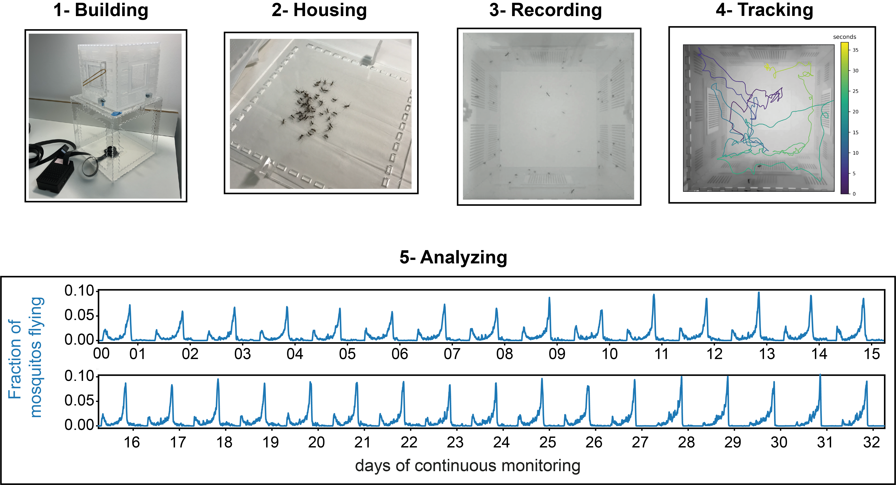

Welcome to BuzzWatch! This website provides comprehensive documentation and resources associated to this article :
Follow our step-by-step guides to go from laser-cutting acrylic pieces to generating publication-ready activity plots of your mosquito experiments.
-
Guides
- 1 - Building acrylic structure and assemble electronic parts.
- 2 - Housing mosquitos and manage experiments
-
3 - Recording
Set-up and adjust Raspberry Pi to continuously record .mp4 videos.
-
4 - Tracking
Extract mosquito state and trajectories from .mp4 movies.
-
5 - Analyzing
Visualize and compare long-term activity between conditions.
-
Complete set-up examples
Examples of tower, insectarium, etc.
-
Help
Troubleshooting, suggestions.